Vocabulary bookmark and reading system for readers, writers, and thinkers. Capture new words as you read — without losing your place, focus, or flow. Plus a companion app to bring the words into your active vocabulary.
Discover the product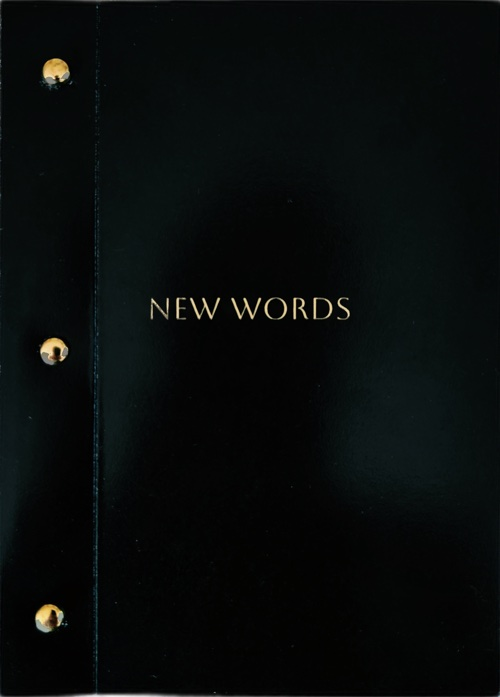
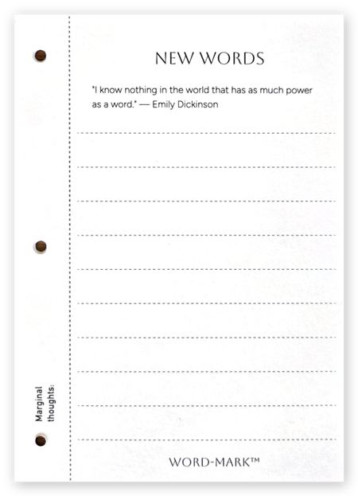
Analog reading and learning, with a beautiful keepsake to hold in your hands. Plus an optional app, for those who like that sort of thing, to bring your words into your active vocabulary.
When it comes to reading, phones are an unwanted distraction. Use your Word‑Mark like any other bookmark.
Once your book is set down and your Word‑Mark is full, bring your words into the Word‑Mark app to keep learning.
Whenever you encounter an unfamiliar word, jot it down and keep on reading.
When you’re done reading, look up your word and record its meaning.
Scan your completed Word‑Mark in the app to save your words.
Discover etymologies and play word games to reinforce what you’ve learned.
Put each word in a sentence of your own, and welcome it into your active vocabulary.
Add your Word‑Mark to your book of new words, for a beautiful physical record.
Then take out a new Word‑Mark, repeat, and watch your vocabulary grow.
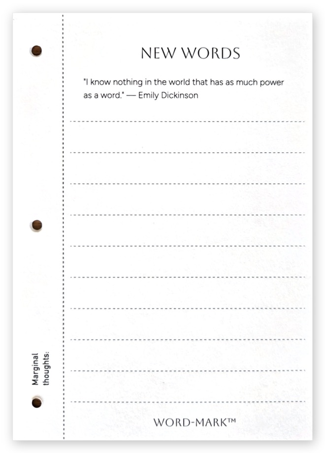
A gentle reminder of the linguistic discoveries that await you on every page.
A different quote on every bookmark, from writers who understood the power of language.
Front and back, for words and their meanings.
Three pre-punched holes, so your completed bookmark slots straight into your book of new words.
High-quality 100 lb stock resists ink bleed and keeps your writing sharp.
A column for the ideas that don't fit elsewhere, obscured once the page is bound.
Each package contains five bookmarks — each one bearing a different literary quote — along with everything needed to bind them into a lasting reference.
Each component of Word‑Mark has been meticulously chosen. Bookmarks and notes pages are printed on 100 lb premium cardstock, chosen for its balance of weight and flexibility — sturdy for regular use, light against a hardback spine, and rewarding to write on. The classic 130 lb black cover, finished in gold ink, protects what's inside while earning its place on your bookshelf. Brass bindings are made to be assembled and reassembled as your book of new words grows. Packaging is made from PLA, a plant-based material that cuts greenhouse emissions by up to 70% compared to regular plastic packaging.
The Word‑Mark app is free and optional. It’s designed to complement your bookmark, helping you expand your active vocabulary during those quiet moments when you’re not reading.
Currently available only on iPhone.
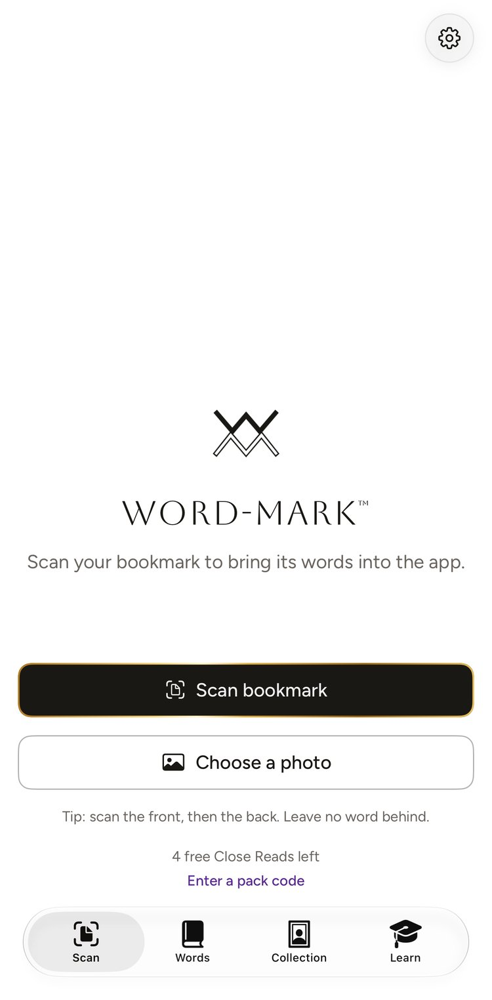
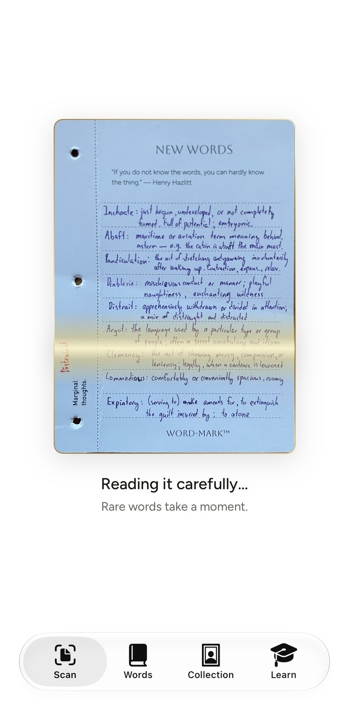
Hold your phone over a full bookmark. Scan the front, then the back, and leave no word behind.
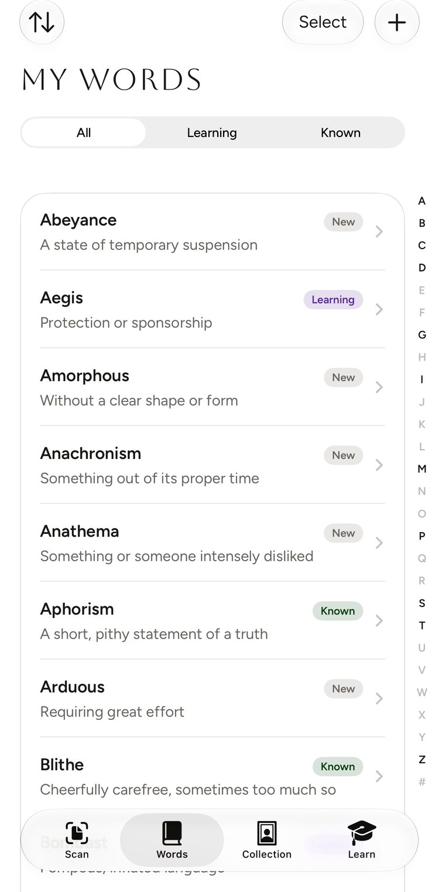
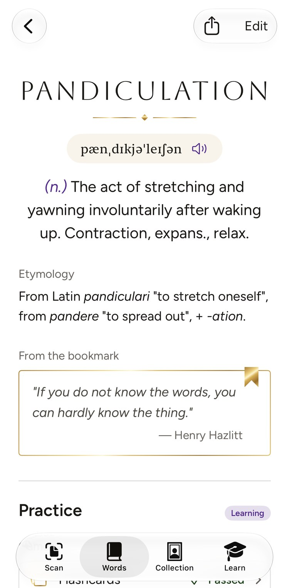
Your collected words appear in a list. Hear how each is said, read its history, and see your learning progress at a glance.
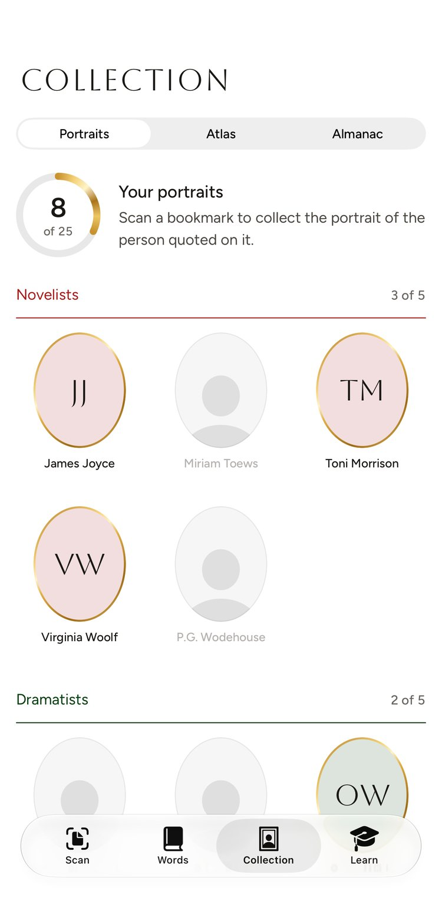
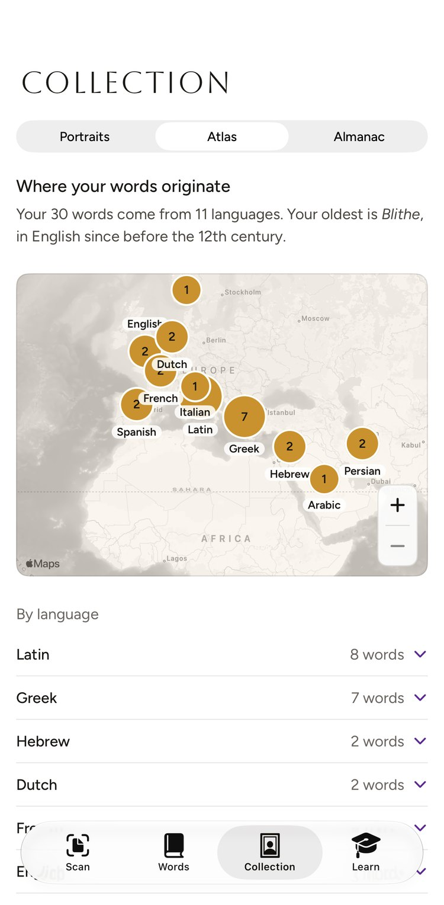
Collect portraits of the writers quoted on your bookmarks. See on a map where in the world your words originate, and on a calendar when you collected and learned each one.
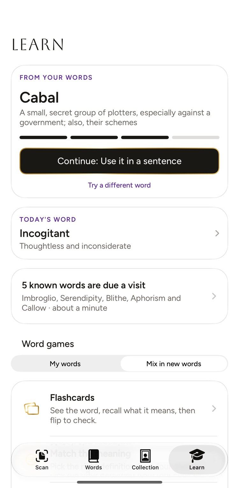
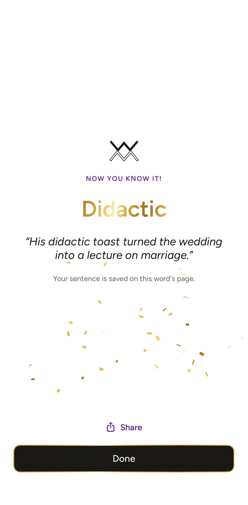
Take the words on your bookmark a step further. Play three short games, then use each word in a sentence of your own to make it part of your active vocabulary.
A potion or balm that banishes grief and brings forgetfulness. From Greek roots meaning "without sorrow"; in Poe's poem, the narrator is urged to "quaff this kind nepenthe and forget this lost Lenore."
The Raven — Edgar Allan Poe
Now available in select stores. Each pack holds five bookmarks, two notes pages, a cover, and three brass bindings.
Where to buyFree to download for iPhone. It works with any Word‑Mark bookmark, and the bookmark works without it.
Download on the App StoreInterested in stocking Word‑Mark? Get in touch